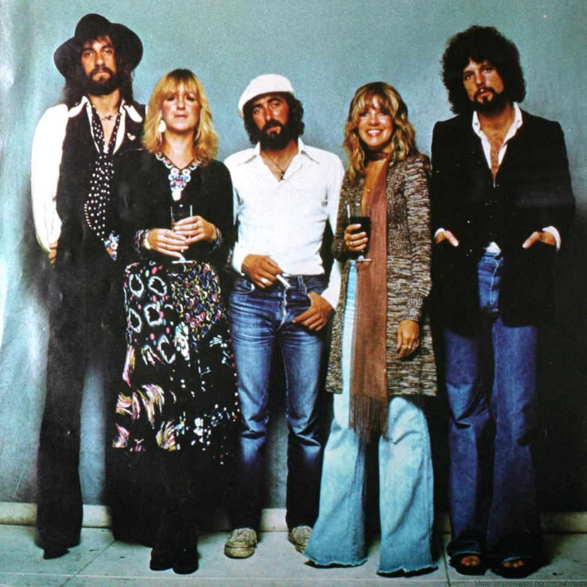
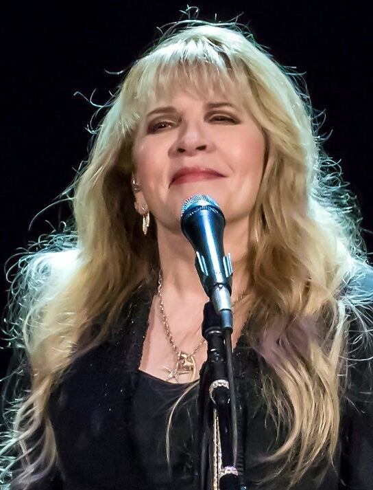

Fleetwood Mac
One of my favorite bands is Fleetwood Mac which formed in 1967. Their music is mellow enough to not get me fatigued but also complex enough to keep me intertwined. I first fell in love with the band when I heard their song "Everywhere" which appears on their Tango in the Night album. John McVie's simplistic but catchy bass lines kept me wanting more. So much so that the song "Dreams" actually inspired me to start playing bass myself.
I also became a big fan of female vocals during this time. Christine McVie and Stevie Nicks are very influential in that enticement. Their voice makes me feel like I am right there in the 70's when they first recorded some of their albums. Since then, I've been fortunate enough to listen to many female vocalists from bands like Souxsie & The Banshees, Cocteau Twins, and Shanon & The Clams.
Christine McVie
Stevie Nicks